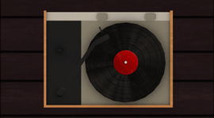

Unity Prototypes

Micro - Plattenspieler
Part of a series of micro games that focus on the tactile sensation of using a touchpad. Urban
A side-scrolling shooter with the exploration of ideas of urban community and activity as a backdrop.

A puzzle game wherein the main mechanic is gaining and losing masses of cubes to form a goal shape.
Clone
A SkiFree clone that aims to improve design aspects of the original through an improved, focused gameplay structure. Music
A shooter in the form of a stylized, interactive music video. GT
A mini-game commentary that attempts to emulate the email inbox of a typical Georgia Tech student.
Abstract
A minimalist abstraction of satellite deployment and the clutter of Earth's orbit. Also includes Part 1 of the Classic Series, Atari. Film
A campy, 8-bit style interpretation of the 1974 film The Street Fighter. Part 2 of the Classic Series, 8-Bit.

An experiment in Mode 7 aeshetics that is based vaguely on surfing. Part 3 of the Classic Series, 16-Bit.
Tap Shooter
An early proof-of-concept designed to improve the tactile sensation of shooter games on mobile devices.

Experimental designs that attempt to incorporate vertigo into elements of gameplay.